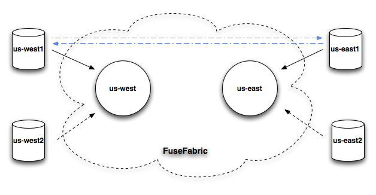

Broker Topology
Fabric8 allows you to easily define A-MQ message broker topologies either via the command line, JMX or via the Fuse Management Console.
Firstly brokers are put into logical groups. A logical group is then used for discovery. So messaging clients just connect to a group & they don't care which broker in the group they connect to.
There are a few different ways to configure Logical Brokers which map to 1 or more physical brokers.
A. Master / Slave Broker
In master slave we create a logical broker in a group. e.g. group A, broker1 and broker2.
Now we've 2 logical brokers. Each of these 2 logical brokers gets a Fabric profile. We can run 1 or more instances of each.
If we run 2 instances of broker1 profile in 2 separate containers; one is the master the other is the slave (with failover).
B. Replicated Broker
In replicated mode you run N replicas of the same logical broker. Typically you'd run, say, 3 replicas; typically inheriting from the mq-replicated profile.
So you'd have 1 profile for a replica set of brokers and you deploy 3 instances of that container.
C. N + 1 Broker
In N + 1 you define N brokers (broker name and configurations) in a group. e.g. group A has broker1 and broker2. Then you create N+1 containers each having all the N brokers inside.
This maps to a single profile for the N+1 group, which contains broker1 and broker2; then you'd run 3 of these containers; with 2 of the containers being master and one being slave to the other 2 brokers.
The standby.group (which defaults to the group) is used to ensure that each container is only master of 1 logical broker; to avoid running 3 containers and 1 of them being master of both broker1 and broker2
Store and forward networks
Store and forward networks are excellent way to connect geographically dispersed brokers. You can have a broker group for the US east region and another group for US west region. Then clients can connect to their local broker, but we still can pass messages between regions through store and forward network. We can easily network brokers from different groups, by defining the networks property in the profile.
Implementation details
Each logical Master/Slave broker, Replicated broker set, or N + 1 group of brokers maps to a Profile in Fabric. Each will have a single broker inside the profile configuration - apart from (C) N+1 Broker which will have N broker configurations.
Broker configurations are defined by the file: io.fabric8.mq.fabric.server-$brokerName.properties inside the profile
Using mq-create
There follows examples on how to create each of the 3 kinds of broker configurations using the comand line shell:
Master / Slave
Lets create a logical broker in group a and have a master and slave
mq-create --group a broker1
container-create-child --profile mq-a-broker1 root broker1c1
container-create-child --profile mq-a-broker1 root broker1c2
Replicated
Lets create a logical broker in group a with a logical broker1 replicated in 3 replicas
mq-create --parent-profile=mq-replicated --group a broker1
container-create-child --profile mq-a-broker1 root broker1c1
container-create-child --profile mq-a-broker1 root broker1c2
container-create-child --profile mq-a-broker1 root broker1c3
N+1 with 2 brokers
Lets create a logical broker in group a and have a master and slave
mq-create --profile broker1and2 --group a broker1
mq-create --profile broker1and2 --group a broker2
container-create-child --profile broker1and2 root brokerc1
container-create-child --profile broker1and2 root brokerc2
container-create-child --profile broker1and2 root brokerc3
Try them all out
Copy/paste this example script to setup 3 profiles with a group each showing all the above in a demo:
mq-create --group a --profile mq-a.masterSlave broker1
mq-create --group b --profile mq-b.replicated --parent-profile=mq-replicated broker2
mq-create --group c --profile mq-c.n.plus.1 broker3
mq-create --group c --profile mq-c.n.plus.1 broker4
Then you'll have 3 profiles created, mq-a.masterSlave, mq-b.replicated and mq-c.n.plus.1 which show master/slave, replicated, N+1 options with a profile for each.
So you're console should look like this (notice the scale column shows how many container instances are required for each profile).

- clicking on the red badges on the right then lets you create containers.
- clicking on the Scale button on the toolbar will let you scale up/down the number of instances of each logical broker
- if you run Fabric on a cloud with an Auto-Scaler (like OpenShift) then it will automatically spin up all the brokers for you (neat eh! :)
Store and forward networks
To demonstrate networks, we will create a master/slave in two groups us-east and us-west and connect them

mq-create --group us-east --networks us-west --networks-username admin --networks-password admin --create-container us-east us-east
mq-create --group us-west --networks us-east --networks-username admin --networks-password admin --create-container us-west us-west
Now we can connect producer to us-east cluster
container-create-child --profile mq-client-us-east --profile example-mq-producer root producer
and consumer to us-west cluster
container-create-child --profile mq-client-us-west --profile example-mq-consumer root consumer
and they observe messages being passed through the route.
Command Line
To create a new logical broker configuration use the mq-create command.
mq-create nameOfBroker
There are many command line options you can type